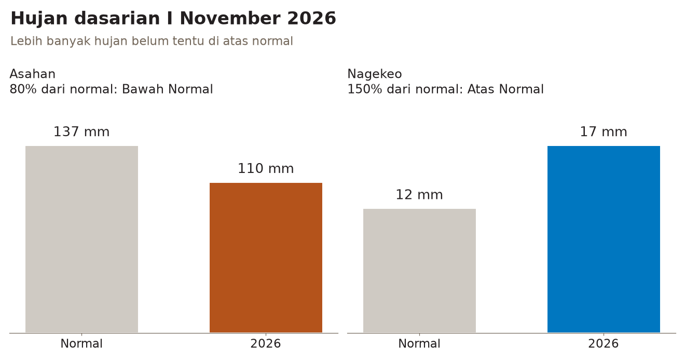
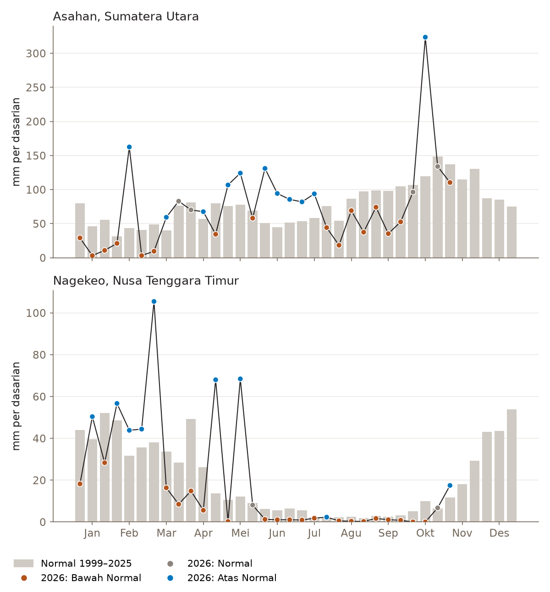
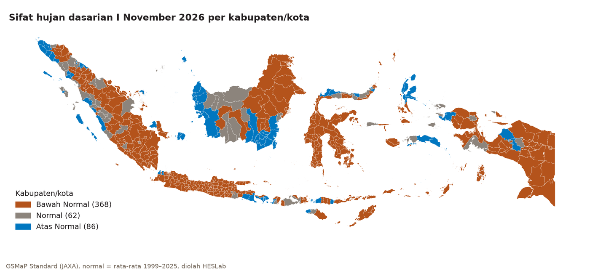

Daftar isi
Pada 1–10 November 2026, Kabupaten Asahan di Sumatera Utara menerima hujan sekitar 110 mm, sedangkan Kabupaten Nagekeo di Nusa Tenggara Timur hanya 17 mm. Namun dalam laporan sifat hujan, Asahan tercatat bawah normal dan Nagekeo atas normal. Kedengarannya terbalik, tetapi justru begitulah sifat hujan bekerja: yang dinilai bukan banyaknya hujan, melainkan perbandingannya dengan yang biasa terjadi di tempat dan waktu yang sama. Tulisan ini menjelaskan cara HESLab menghitung hujan dasarian dan sifat hujan, dan cara membacanya.

Dasarian: hujan sepuluh harian
Dasarian adalah periode sepuluh hari yang dipakai BMKG untuk memantau musim. Setiap bulan dibagi tiga:
| Dasarian | Tanggal | Panjang |
|---|---|---|
| I | 1–10 | 10 hari |
| II | 11–20 | 10 hari |
| III | 21 sampai akhir bulan | 8 sampai 11 hari |
Setahun berisi 36 dasarian. Satuannya cukup pendek untuk menangkap awal musim hujan atau jeda kering di tengah musim, tetapi cukup panjang sehingga tidak terombang-ambing oleh hujan satu hari. Karena dasarian III bisa 8 sampai 11 hari, jumlah hujannya selalu dibandingkan dengan dasarian III bulan yang sama pada tahun-tahun lain, bukan dengan dasarian I atau II.
HESLab menjumlahkan hujan harian GSMaP Standard (JAXA) per kabupaten/kota untuk setiap dasarian sejak 1998. Hasilnya tersedia di halaman Hujan Dasarian HESLab Portal.
Normal: yang biasa terjadi di tempat itu
Normal sebuah dasarian adalah rata-rata hujan dasarian yang sama selama 27 tahun, 1999 sampai 2025, di kabupaten/kota yang sama. Periodenya bergeser setiap tahun: laporan tahun 2027 nanti memakai 1999–2026. Tahun 1998 tidak dipakai karena arsip baru dimulai 11 Januari 1998, sehingga dasarian I Januari tahun itu tidak lengkap.

Gambar di atas memperlihatkan mengapa normal harus dihitung per tempat dan per waktu:
- Asahan basah sepanjang tahun. Normal setahunnya sekitar 2.780 mm, dan pada awal November normalnya 137 mm per dasarian.
- Nagekeo jauh lebih kering, sekitar 740 mm setahun, dengan musim kemarau yang tegas. Pada Juli sampai September normalnya hanya 2 sampai 3 mm per dasarian, dan pada awal November baru 12 mm.
Hujan 17 mm di Nagekeo pada awal November sudah melampaui yang biasa terjadi. Hujan 110 mm di Asahan masih kurang dari biasanya.
Sifat hujan: tiga kelas
Sifat hujan adalah hujan sebuah dasarian dalam persen dari normalnya, lalu dikelompokkan menjadi tiga kelas. Batasnya sama dengan kelas sifat hujan BMKG:
| Sifat hujan | Persen dari normal |
|---|---|
| Bawah Normal | kurang dari 85% |
| Normal | 85% sampai 115% |
| Atas Normal | lebih dari 115% |
Asahan: 110 mm dari normal 137 mm, atau 80%, jadi Bawah Normal. Nagekeo: 17 mm dari normal 12 mm, atau 150%, jadi Atas Normal.

Untuk seluruh Indonesia, pada dasarian I November 2026 ada 368 kabupaten/kota bersifat Bawah Normal, 62 Normal, dan 86 Atas Normal. Bawah Normal menutupi hampir seluruh Jawa, Sulawesi, dan Papua bagian selatan. Atas Normal terkumpul di Kalimantan Barat dan Kalimantan Selatan, pesisir barat Sumatera, dan sebagian Maluku Utara.
Tiga hal yang perlu diperhatikan
Satu dasarian belum menggambarkan musim. Asahan mencatat 324 mm pada dasarian II Oktober 2026, atau 270% dari normal. Dasarian berikutnya 90% (Normal), lalu 80% (Bawah Normal). Bila empat dasarian dari awal Oktober sampai 10 November dijumlahkan, totalnya 664 mm terhadap normal 512 mm, sekitar 130%. Label Bawah Normal pada dasarian I November tidak berarti Asahan sedang kekeringan. Kekeringan baru patut diwaspadai bila Bawah Normal berlangsung beberapa dasarian berturut-turut.
Persen bisa menyesatkan saat normalnya sangat kecil. Di Kabupaten Rote Ndao, dasarian III Oktober 2026 mencatat 1,7 mm terhadap normal 1,4 mm, atau 119%, sehingga tergolong Atas Normal. Selisihnya kurang dari setengah milimeter. Pada musim kemarau di daerah kering, selalu lihat juga jumlah milimeternya, bukan hanya kelasnya.
Ini normal satelit, bukan normal penakar. GSMaP Standard tidak dikoreksi dengan penakar hujan di darat, dan dalam kajian HESLab di Kota Pontianak, satelit sering mencatat hujan lebat lebih kecil daripada penakar. Karena itu HESLab membandingkan hujan satelit dengan normal dari satelit yang sama, bukan dengan normal stasiun. Angka persennya bisa berbeda dengan sifat hujan yang diterbitkan BMKG, yang dihitung dari data pengamatan dengan normal sendiri. Untuk informasi resmi, rujuk BMKG.
Hubungannya dengan prakiraan musiman
Kata "normal" juga muncul di prakiraan musiman, tetapi artinya berbeda. Di sana normal adalah sepertiga bagian tengah hujan model pada 1991–2020, seperti dijelaskan dalam Membaca prakiraan musiman. Sifat hujan dasarian menilai hujan yang sudah turun, sedangkan prakiraan musiman memberi peluang untuk bulan-bulan yang akan datang. Keduanya dibahas berdampingan setiap bulan dalam artikel El Niño dan IOD.
Data
- Hujan: GSMaP Standard (JAXA), dijumlahkan per dasarian dan dirata-rata per kabupaten/kota oleh HESLab. https://sharaku.eorc.jaxa.jp/GSMaP/
- Normal: rata-rata dasarian yang sama 1999–2025.
- Kelas sifat hujan: Bawah Normal < 85%, Normal 85–115%, Atas Normal > 115%, batas yang sama dengan kelas sifat hujan BMKG.